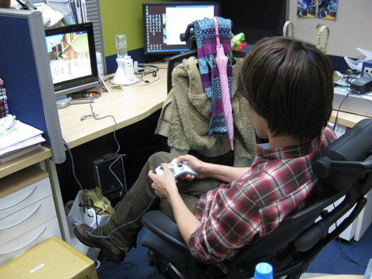
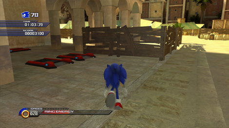
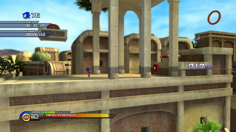
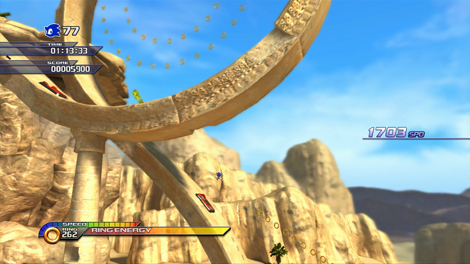
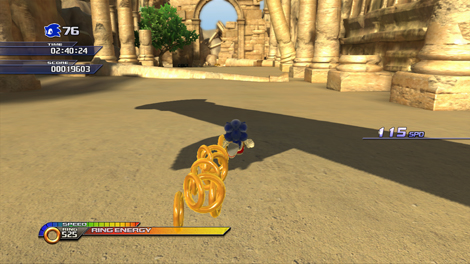
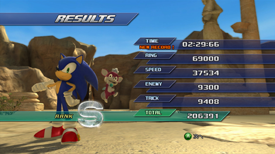

『タイムアタック企画第4回☆ ホットデザートAct1』
2009年04月07日
こんにちは！
マツバラです！
もう、4月になりましたね。
会社のまわりの桜もすっかり満開です！
ぽかぽかと暖かい日が続いて
思わずウトウトしちゃいますね～☆
おはようございます。
ヨシノです。
気持ちよく寝ていたら
マツバラに叩き起こされました。
仕事中だから当たり前でしょ……
マツバラ、許すまじ。
逆切れしない！
さて今回は、
タイムアタック企画第4弾☆
灼熱の砂漠を駆け抜ける「ホットデザート」Act1です！
それでは、
「ホットデザート」Act1を制作した井上さん、
よろしくお願いしますです。
井上 ： おー。今やってるよー。

ここも、なかなか苦労するステージですよね！
私も、結構順調に攻略できたんですけど
この「ホットデザート」で少しつまづきました……。
井上 ： そう？かなり簡単にしたんだけどな。
いや、今のも充分難しいと思いますよ。
井上さんらしい立派なサドステージです。
井上 ： サドステージ言うな(笑)
でもクリアはしたんだろ？
ええ、襲い来るトゲにより
大量のソニックが犠牲になりましたが。
苦難と死闘の果てにやっとゴールリングが見えたときは
アメリカ大陸を発見したコロンブスの気持ちでした……
ヨシノ、バグチェック報告に
「クリアできません」って書いて出そうとしてたよね！
井上 ： おい(笑)
でも、ここも、
慣れたらブーストボタン押しっぱなしで
ゴールまで行けちゃうんですか？
井上 ： 基本的にはそうだけど・・・・・・
ここは、「常にブーストボタン押しっぱなし」にするんじゃなくて
ブーストの抜きどころを意識してもらうようにも作ってあるんだ。
どういうことですか？
井上 ： 例えば、こことか。

井上 ： 序盤にある市場付近の１８０度カーブなんだけど、
インコースの物陰にダッシュパネルが隠してあるだろ？
ここはブーストを切って突入すれば木の壁が壊れないから、
それを利用して簡単にダッシュパネルに乗れるようにしてある。
だから、気づくことさえ出来れば誰にでもできるんだ。
そ、そこまで計算してたんですか……！
井上 ： オレだけじゃなく、レベルデザインする人は、
ステージの細部まで緻密に計算してると思うよ。

井上 ： ここなんかも、そう。
飛び出す直前にブーストを切ることで、
写真にあるように下側のルートに進めるんだ。
すこしテクニカルだけど、こっちのほうが早い。
そして何より気持ちいい。
玄人向けのルートが隠されているんですね！
井上 ： そう意識して遊んでもらえると嬉しいな。
うっ……
も、もうすこし簡単なショートカットとか
ありませんか……？
井上 ： うーん……。

井上 ： 一応、ここなんかは、
写真のタイミングで右下のリングに向かって飛び出せば
時間のかかる踏破パートをカットできるようになってるけど、
そもそも大幅な隠しルートはそんなに入れてないんだよ。
自らのテクニックで勝負するステージですね。
燃えます！
井上 ： そういうこと。
で、すべてのアクションをマスターしたら、
そのときはフルブーストで駆け抜けてみて欲しい。
おお、やっぱりそうなんですね！
井上 ： なんでかというと……、
本来はブーストしない部分を計算して作っているステージだから
フルブーストで突っ込むと無理のある場所がいくつかあるわけ。
制御が難しくなったり、タイミングがシビアになったりね。
たとえば、こことか。

井上 ： ブーストしていると倒れている柱につまづきやすいんだが、
そこをあえてブーストで突っ込むわけだ。
設計限界を超えるにはそこしかない。
あっ、私、
そこは、柱につまずかずに走れましたよ。
井上 ： おっ。マジで？
ええ。
柱が倒れてきて怖いから、
柱が全部倒れるのを待ってから、そっと歩いて通ったので。
井上 ： あのなー！(笑)
そういうゲームじゃねーだろ！！
これが私の生きる道です。
ではそろそろ井上さん、
タイムをお願い致します！

2分30秒……切ってる……！？
井上 ： まずは3分くらいを目指してほしいけど、
目標タイムはこのくらいかな。
井上さん、
どうもありがとうございました！
さて、これにて
タイムアタック企画を終えるわけですが……
皆さま、いかがだったでしょうか！
練習中、
ボタンを押す指が痛くて死ぬかと思いました。
いや、ヨシノには聞いてないから。
ただクリアするだけでなく、
ステージを攻略し自分だけのルートを探していくのも
「ソニック」の醍醐味のひとつです。
『SWA』は、繰り返しのプレイに耐える
奥深いステージ揃い！
是非とも、スタッフのタイムに挑戦してみてくださいね！
------------------------------------------------------------------------------------------------------
［お詫びと訂正を申し上げます］
一時、当サイトに、作成途中の記事が掲載されておりました。
正しい記事は上記のとおりです。大変失礼致しました。
日時: 2009年04月07日 20:00 | パーマリンク


 ソニックを愛する、元気な『SWA』2年目プランナー。
ソニックを愛する、元気な『SWA』2年目プランナー。 マイペースな『SWA』2年目プランナー。
マイペースな『SWA』2年目プランナー。
 ご意見・ご要望はこちら
ご意見・ご要望はこちら RSS
RSS